FencingNew boundaries and smart finishing for your garden
SIX TOWNS · FENCING & LANDSCAPING
Make more of your outdoors.
From a fence that frames the garden to a complete outdoor transformation, bring your plans to Six Towns.
Fencing & GatesGarden TransformationsPatios & PavingLandscaping
Made to Measure GatesGates shaped to fit your opening and style
Garden TransformationsFresh layouts, patios, decking and usable spaces
Resin Patios & LandscapingOutdoor surfaces and complete garden projects
YOUR GARDEN, REIMAGINED
Good boundaries. Better places to be.
Six Towns works across fencing and landscaping, bringing together the parts that make a garden feel finished: secure boundaries, made to measure gates, patios, decking and the space in between.
Request a quote →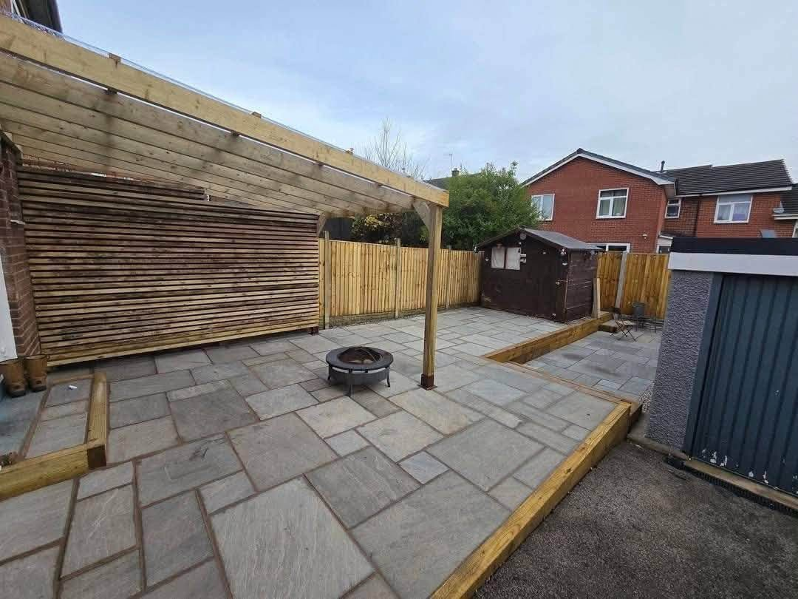
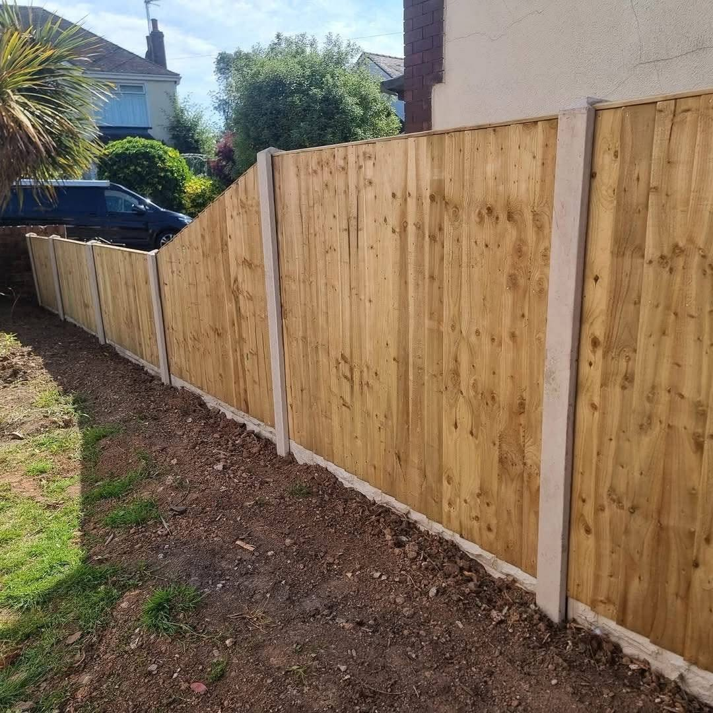
FENCING & GATES
A better frame for the whole garden.
From classic timber panels to horizontal slatted fencing, Six Towns' project photos show different ways to create privacy and give an outdoor space a clean, considered edge. Ask about a gate made to fit your opening.
Discuss your project →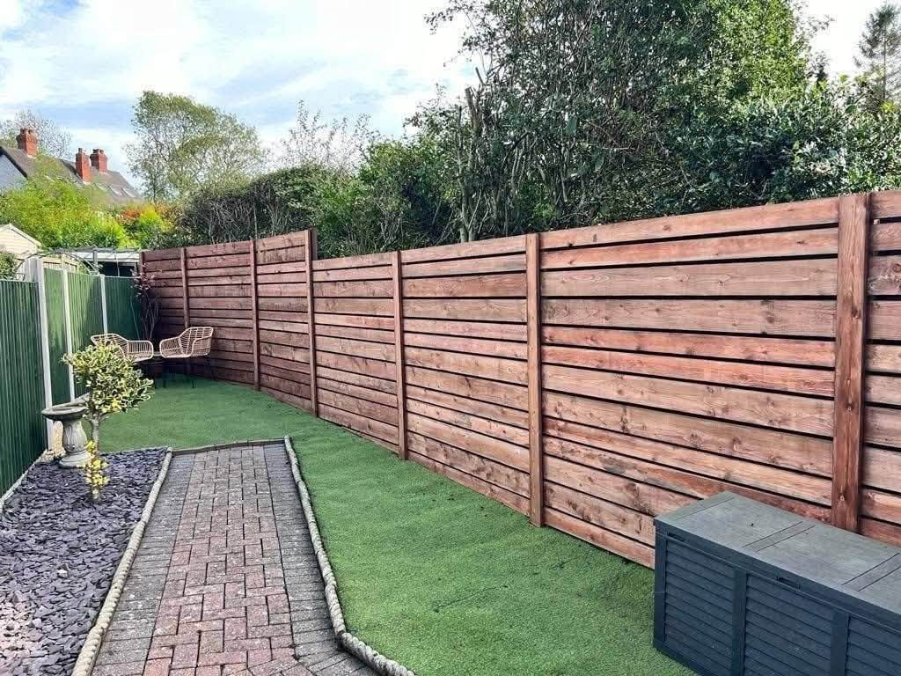
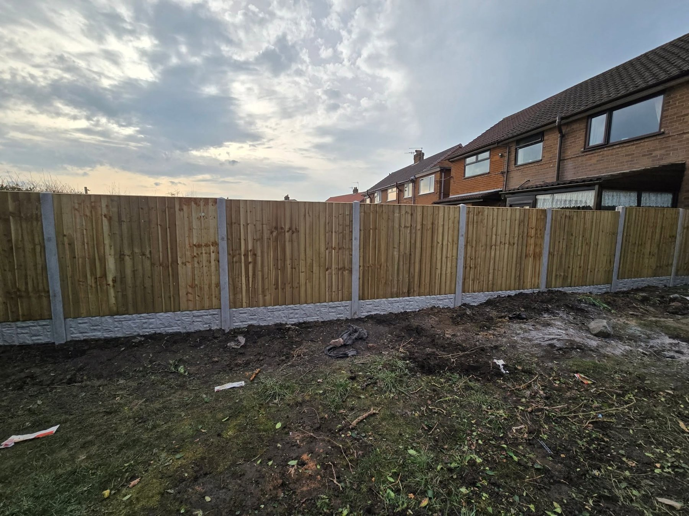
RECENT WORK
Real gardens. Real finishes.
A selection of Six Towns fencing and landscaping projects.
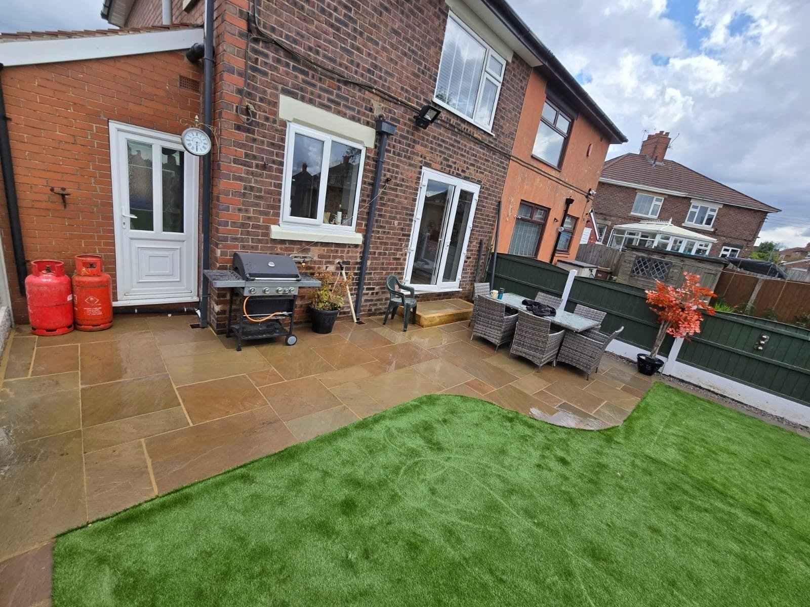
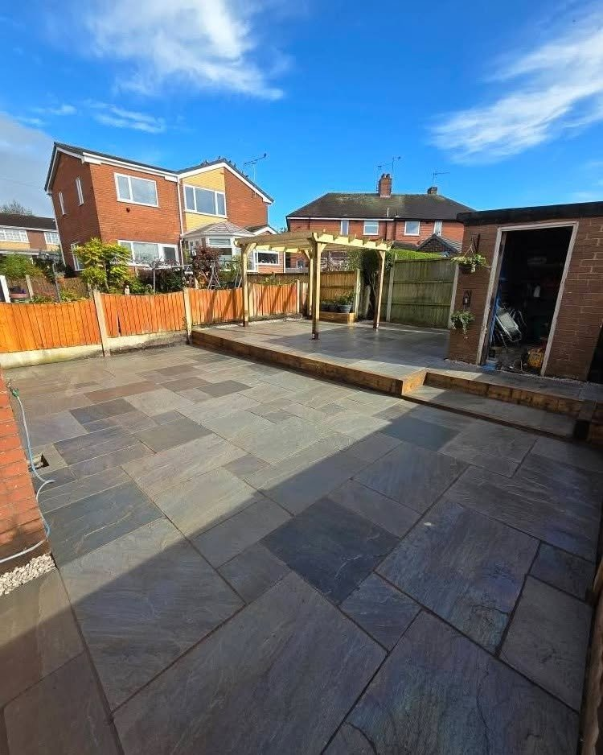
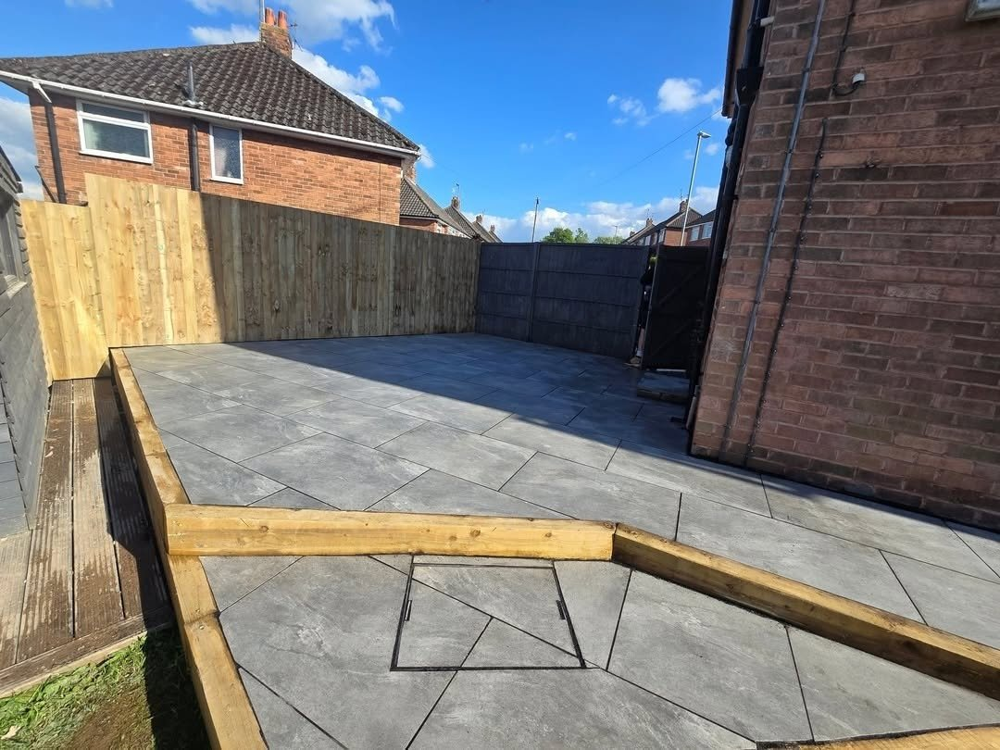
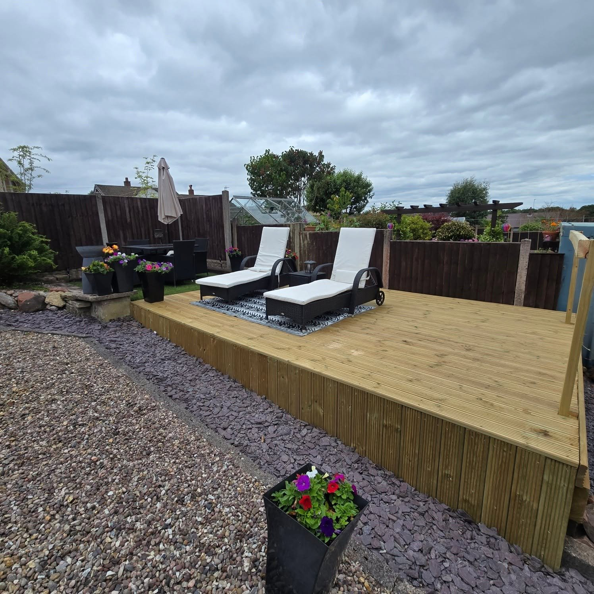
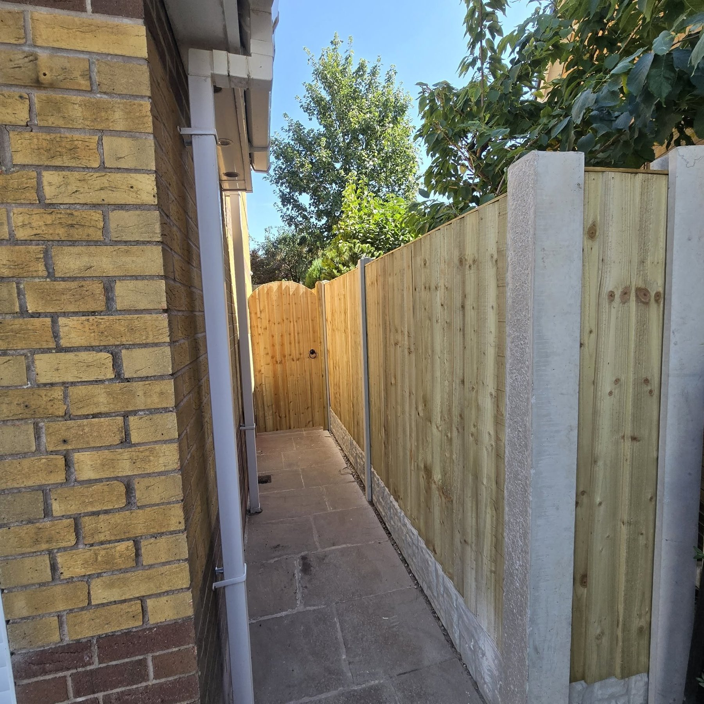
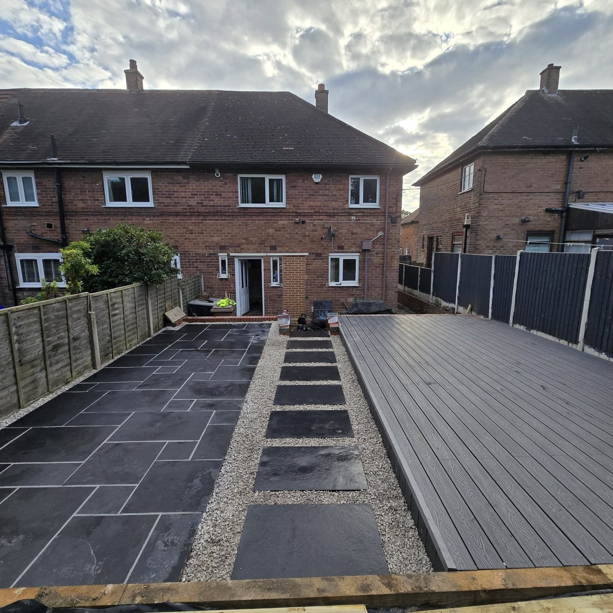
THE WORK BEHIND THE FINISH
Every transformation starts somewhere.
From the first stages of groundwork and framing to the paved and decked spaces that follow, a good garden is built step by step.
Plan your project →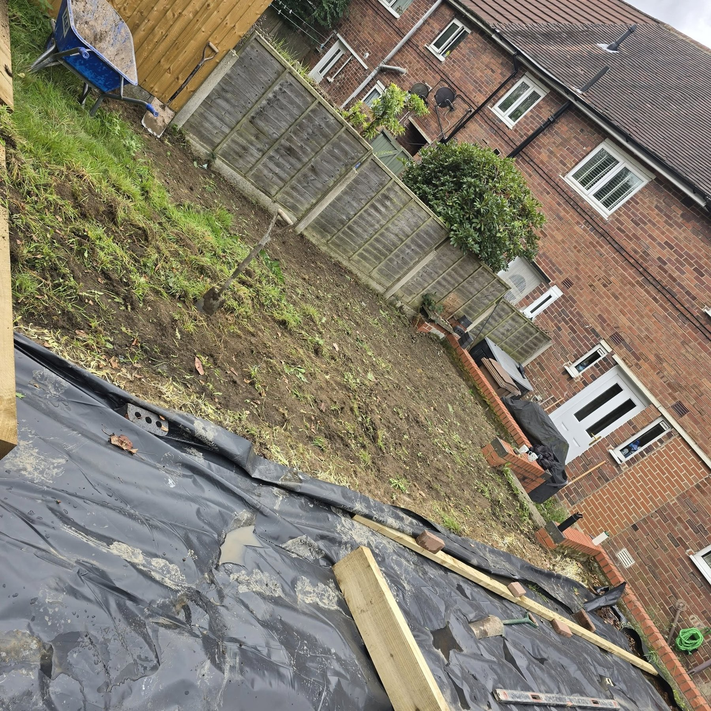
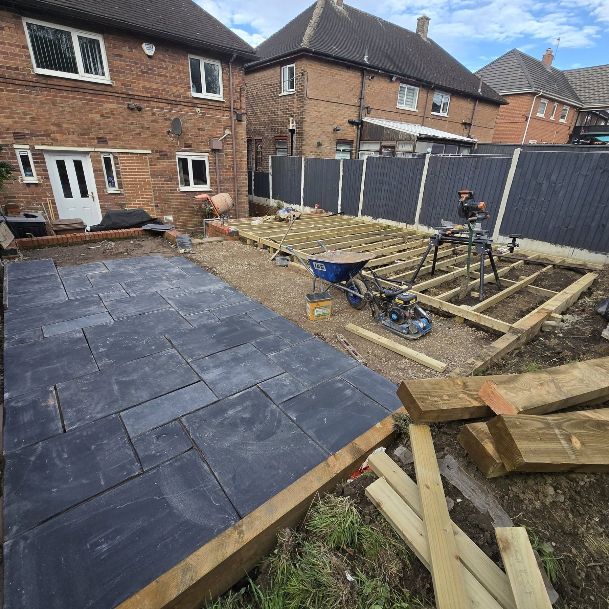
ABOUT SIX TOWNS
One team for the garden around your home.
Six Towns Fencing and Landscaping offers garden transformations, fencing, made to measure gates, resin patios and more. The project photos show the range: boundary work, paving, lawn areas and decking.
01
Fencing & privacy
Practical boundaries that help the garden feel like your own space.
02
Spaces to enjoy
Patios and decking designed for everyday use.
03
Full garden projects
Bring the whole outdoor space together with a clear plan.
REQUEST A QUOTE
Tell Six Towns what you have in mind.
Complete the form and WhatsApp will open with your project details ready to send. This is a quote request, not a confirmed booking.
Or call 07533 948799.
SIX TOWNS FENCING & LANDSCAPING
Ready to get started?
Fencing · Gates · Landscaping · Patios